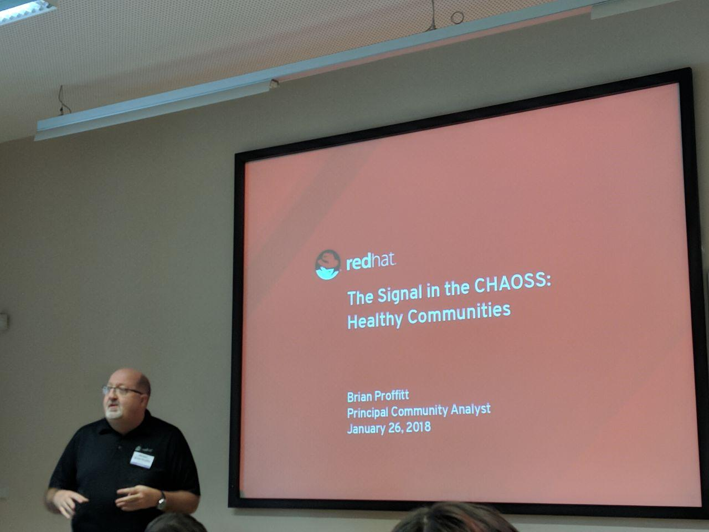
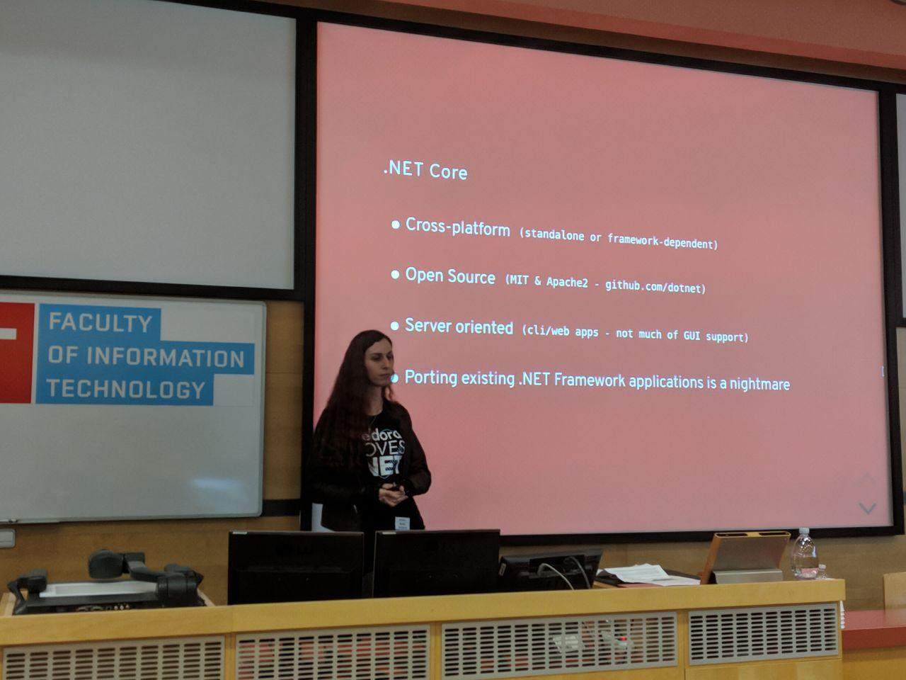
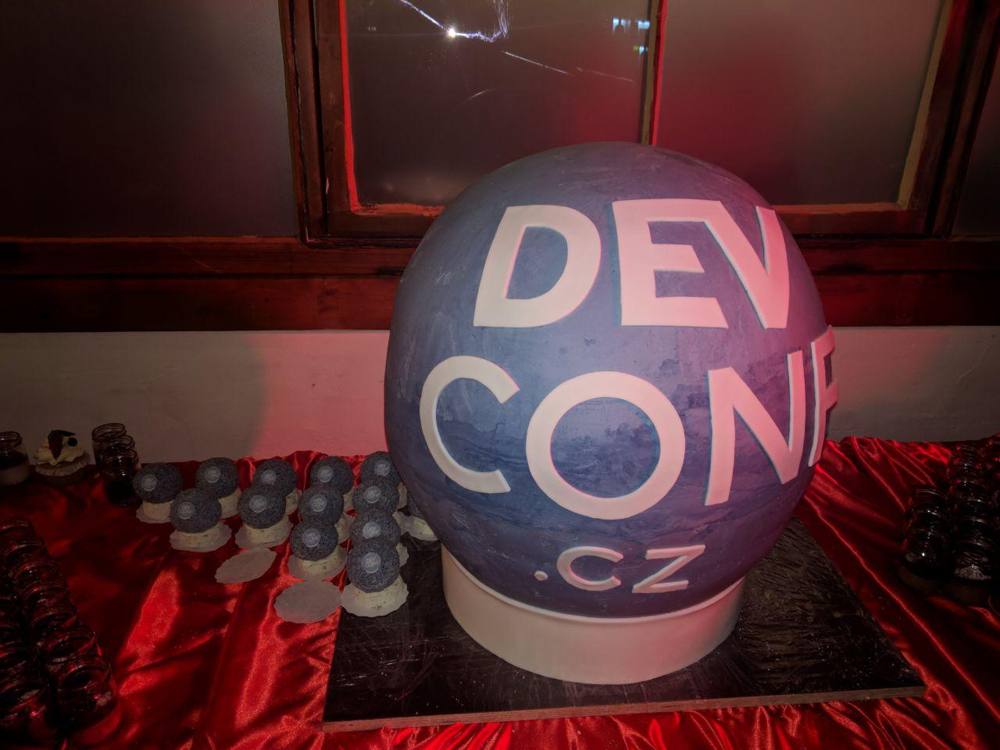
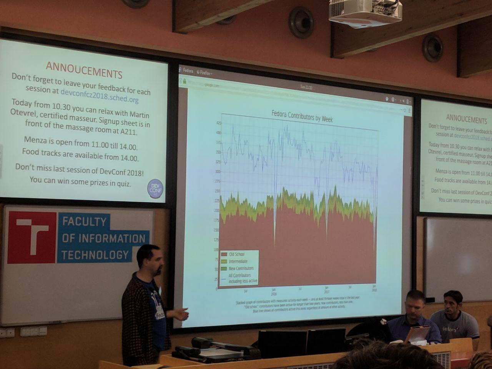
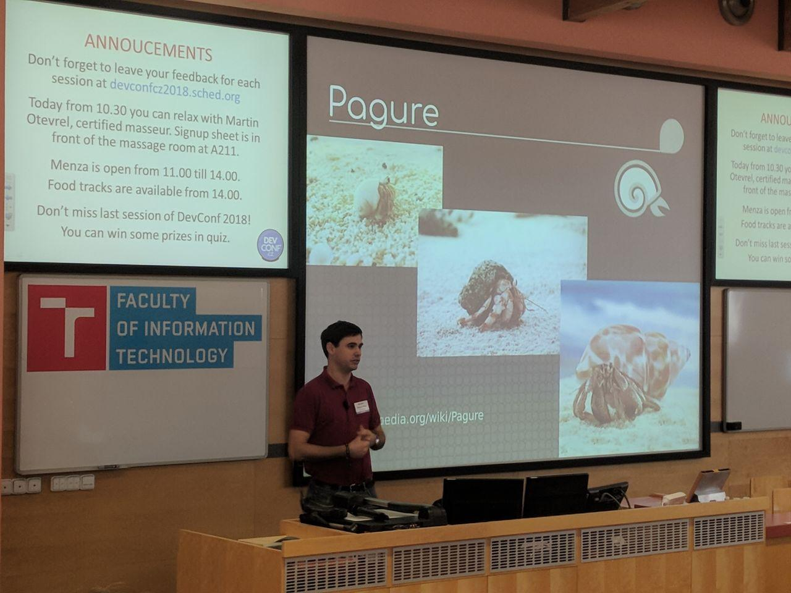

Fedora and me at Devconf
What?
Devconf is an annual developer conference which happens across continents and I got an opportunity to attend the Europe edition of Devconf in Brno, Czech Republic. Devconf is a 3 day event filled with super-cool tech talks about the latest Red Hat and general open-source technology.
Tell me more
Friday
I reached late on the first day and helped setup the Fedora booth. We had loads of stickers, pens, buttons and stickers in the booth and also a demo system which ran a gaming benchmark program which ran on the open-source graphic drivers. It was nice to see a decent FPS on it but there's a long way to go for Gaming on Linux. That said, the Wine Project is doing a pretty good job supporting Windows binaries, DirectX and other Windows software on Linux.
After a couple of hallway tracks, the first talk I attended was on CHAOSS, an organization which tries to evaluate community health using metrics available within the community. As a person who works on metrics, I understand how important it is to present the right kind of metrics to answer crucial questions about community. Brian Proffitt, a community analyst at Red Hat walked us through on what a healthy community looks like and how to measure community health. While talking about it, he also talked about how important it is to be careful not to gather/leak information about contributors while dealing with sensitive topics such as Diversity and Inclusion. It was a really well-structured talk and gave me new insights about the topic.

After attending the talk, I quietly sat down on a work table and started hacking a bit on Perceval, a metrics tool that Fedora is planning to integrate into the metrics ecosystem. I also visited a few booths, almost all of them were various community projects of Red Hat. After lunch, I went to meetup with Justin, another awesome CommOps superstar who arrived in the afternoon. After a bit of casual talk, we went to attend 'C# development' talk in Fedora. Although I don't use C#, I think it's a pretty neat language for development by Radka Janeková and Tom Deseyn, two .NET engineers working at Red Hat. The talk gave a brief introduction to .NET and Tom talked about the new features in the latest C# version although he couldn't finish it in time. It looked pretty neat to me and had introduced really good changes to the existing language typeset.

I helped at the Booth after the talk, walked back to the hotel to grab my charger, and made just in time for the 10th Anniversary Celebration Surprise. From the looks of it, it was pretty obvious they had carefully planned it and it was a spectacular display of fireworks. There was a champagne party shortly afterwards and day 1 ended in style!
Saturday
I arrived pretty late on Saturday as I was kinda tired after the flight and day 1 celebrations. At 10.30, I got ready to attend the Atomic Host 101 Lab by Dusty which I had missed during the last Flock due to the timing conflicts only to find the room was full :( I sat down at the booth looking at his blog post and followed it for a while until I heard about the Red Hat coding challenge. I decided to try it out and realized I hadn't written code in a very long time. I was struggling with split, joins and other python concepts and decided to write code almost everyday. I implemented a solution which was pretty greedy and read that the competition is only for non Red Hatters :( But, I was pretty happy I could implement a decent enough solution for it :)
After staring at the black and green screen, I decided to stare at something more colorful when Justin realized that we did not have a Devconf badge yet. With help from Maria, a Fedora design team member, I sent a pull request to the badges repo with the Devconf badge. And as usual, Justin claimed it first (he checoughated). I also hacked on making a Devconf speaker and FOSDEM attendee badge because I had nothing else to do :p
After volunteering at the booth and talking about Fedora to a few folks, I went in to attend the lightning talks. Among them, the one which caught my attention was a talk on emojisum, which generates emojis instead of checksums which makes it really easy to compare hashes!
There was a social event after the day with a lot of free! (as in free beer) beer and food and a giant Devconf cake \o/

Sunday
I had a feeling that they had saved the best talks for the last and there were a lot of interesting talks, especially in the community track. The day opened with a Keynote by Matthew Miller, Jim Perrin and Michael McGrath, who talked on the title "What Red Hat wants from Fedora and CentOS". This was the best opening talk I have attended so far and gave a very good overview of the Fedora-CentOS-Red Hat relation and they also joked (uh huh?) about the secret agenda Red Hat for conquering the world of Open Source. After the session, I went to attend the Fedora Panel discussion. There was a discussion about the council, voting process, diversity and a lot of other hot topics going around in the community. I was hacking on Inkscape a bit to fix the FOSDEM badge png I had pushed so I missed a good bit of the discussion.

After this was State of Pagure talk by Pingou (Yesss, in the same room). He started off with a picture of a nice little experiment we were doing at the Fedora booth. We had set up a board which reads "Hi, My name is

After this talk, I went to volunteer at the Fedora booth and helped Miro with recordings of people pronouncing Pagure :D I also met up with pjp, an ambassador and APAC treasurer, who runs the APAC meetings. We chatted a bit about the current state of ambassador program and Mindshare initiative. I was walking around after this and heard that there was a security survey going on around in the campus. I went to take up the survey, which was about SSL certificates and how people understood it. As a person who has used LetsEncrypt a lot, I breezed through some of them but I found some of the certificates really interesting, where the CA had signed their own certificate. The survey made me realize how little I know about openssl (yes, I thought I was kinda good with it before)
And the last one as per Sched was the "Closing and WIN!!WIN!!WIN!!" session where random amusing, wacky and thought provoking questions were asked and people had to raise their left or right hand to answer. The last ones standing got cool Devconf and Red Hat swag (which I didn't). After the session, I chatted to Chris Ward, the organizer of Devconf about Devconf India and volunteered to help in any way I can :)
It was a great conference and it was really a great learning experience for me. If I had to blame something, I'd say that it was too Red Hat centric, but hey, it's almost entirely a Red Hat sponsored event and of course, Red Hat is not a charity ;)
And of course, I got a shiny new badge for attending Devconf. One step closer to Top 100!